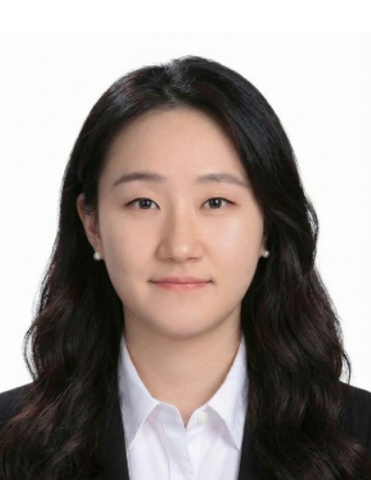

Hiyoung Kim, Ph.D.
Assistant Professor, Biomedical Science & Engineering
Konkuk University, Seoul, Republic of Korea
Hiyoung Kim is a marine natural product chemist and microbiologist. She received her Ph.D. in Marine Natural Product Chemistry from Seoul National University, where she worked on the isolation and structural elucidation of bioactive metabolites from marine invertebrates and microorganisms. After postdoctoral training at the University of Illinois Chicago and research positions in industry and at Konkuk University, she established the Marine Metagenome Mining Lab (M3 Lab) in 2024.
Her group focuses on mining marine microbiomes and environmental metagenomes to uncover new secondary metabolites, decoding their biosynthetic gene clusters, and understanding the chemical ecology between marine hosts and microbial symbionts.